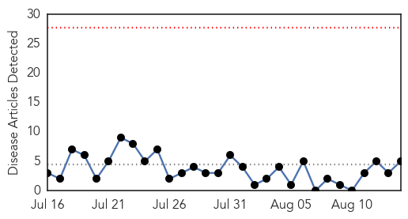
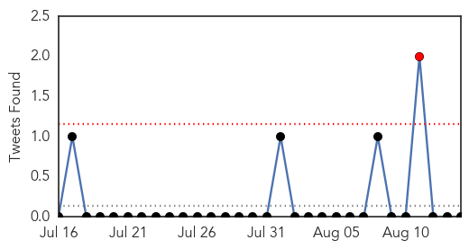
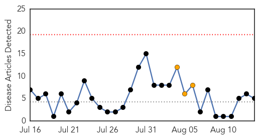
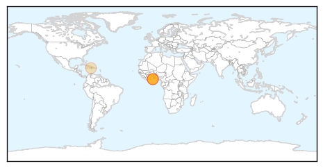
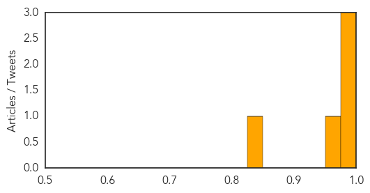

Influenza
30-Day Web Trend
0 alerts, 0 warnings

30-Day Twitter Trend
2 alerts, 0 warnings

Article Locations

Article Confidences

Top Articles:
Top Tweets:
-
No tweets found for Aug 14, 2014
Cholera
30-Day Web Trend
0 alerts, 3 warnings

30-Day Twitter Trend
4 alerts, 0 warnings

Article Locations
Article Confidences
Top Articles:
- 0.995
- Accra declared as epidemic area for cholera
- 0.978
- Cholera outbreak: Afotey Agbo ashamed as Minister
- 0.976
- Afotey Agbo: Cholera scourge makes me feel ashamed as a Minister
- 0.969
- Ghana In Disease Surveillance Aainst Cholera, Ebola
- 0.828
- Haitian Nurses Work With Palmetto Health Children's Hospital Staff
Top Tweets:
-
No tweets found for Aug 14, 2014